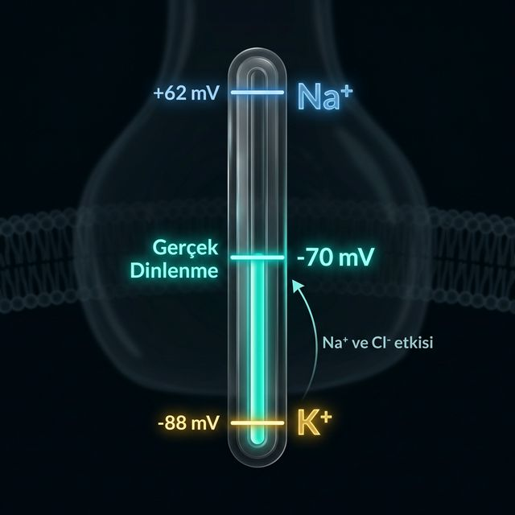

Her iyon zardan geçmek için iki zıt kuvvetle karşı karşıya: konsantrasyon farkı onu bir yöne iter, elektriksel yük onu diğer yöne çeker. Denge potansiyeli bu iki kuvvetin birbirini sıfırladığı voltajdır.
K⁺ içeride çok yoğun (140 mM), dışarıda az (5 mM). Konsantrasyon kuvveti onu dışarı iter. K⁺ dışarı çıktıkça içerisi negatifleşir ve bu negatiflik K⁺'yı geri çekmeye başlar. Bu iki kuvvet −88 mV'ta dengelenir. Gerçek dinlenme −70 mV olduğu için K⁺ hâlâ hafifçe dışarı sızmaya devam eder.
z: iyon yükü (+1/-1), [X]: konsantrasyon. K⁺ için: 61.5 × log(5/140) = −88 mV.
| İyon | İç (mM) | Dış (mM) | Denge Pot. |
|---|---|---|---|
| K⁺ (z=+1) | 140 | 5 | −88 mV |
| Na⁺ (z=+1) | 15 | 145 | +62 mV |
| Cl⁻ (z=-1) | 10 | 110 | −65 mV |
K⁺ zarını −88'e, Na⁺ ise +62'ye çekmek ister. Cl⁻ dinlenme potansiyeline yakındır.
Eğer zar yalnızca K⁺'a geçirgen olsaydı iğne −88'de otururdu. Ama Na⁺ ve Cl⁻'a da geçirgenlik var. Na⁺'un +62 mV'luk çekimi iğneyi pozitif yöne kaydırır. Sonuç: Ağırlıklı bir uzlaşma noktası olan −70 mV. Bu hesabı Nernst tek başına yapamaz, GHK devreye girer.
Nernst her iyonun "istediği" voltajı hesaplar. Gerçek membran potansiyeli ise bu isteklerin geçirgenliğe göre ağırlıklı ortalamasıdır — o hesabı GHK yapacak.
